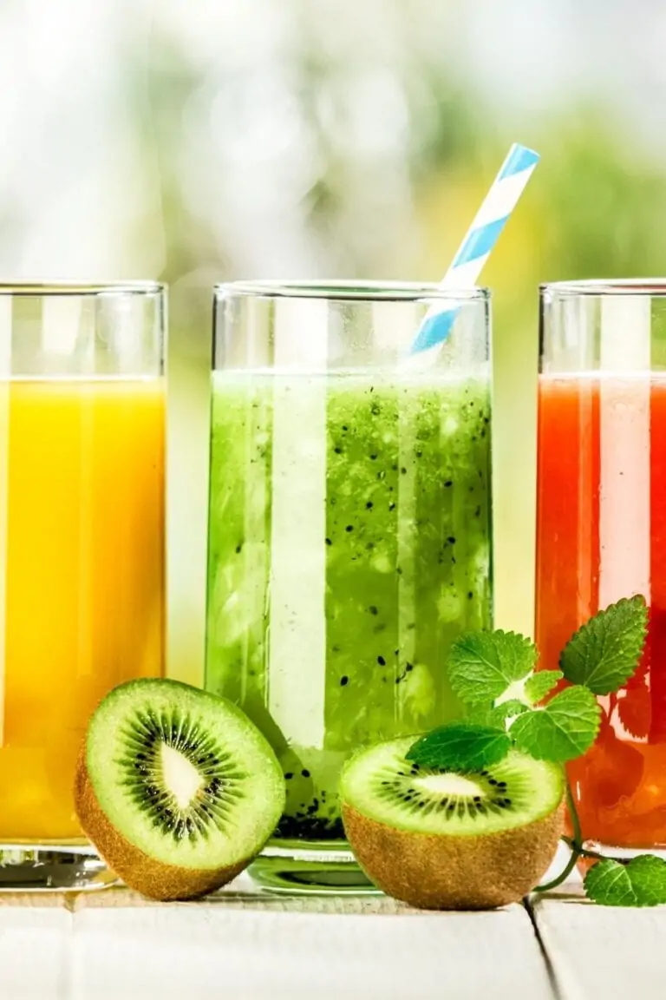
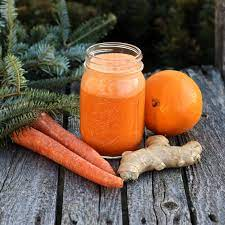

Juice Recipes

- Light Juice :- Light Juice :-
his blend is packed with the leafy greens most people should be eating, but tend to avoid
because of the taste. To make this easy introduction into juicing, simply process four large handfuls of spinach, one
large leaf of kale, one large cucumber, half a peeled lemon, one apple, and one small carrot.

- Carrot Juice Recipe with Orange & Ginger:-
Carrots are naturally sweet, so they make the perfect ingredient for juicing. The less added sugar you have to incorporate, the better, after all.
This recipe is bursting with vitamin C, thanks to the inclusion of orange. And let's not forget the antioxidants in ginger.
So it's the perfect juice to drink if you think you're getting sick.
Fresh ginger is the best for this, but I know it can be a pain to peel.
I suggest you peel a big batch at once (do it in front of the TV if you want!) and then freeze it down for later.

- Green Juice Recipe :- Green juice is all the rage these days, and for good reason.
Greens are a great source of fiber, antioxidants, nutrients, minerals, folate, Vitamin C, and potassium.
They can help to reduce inflammation, build up your body's immune system, and they're even good for your skin.
Of course, what you get out of it will depend on what you put into it.